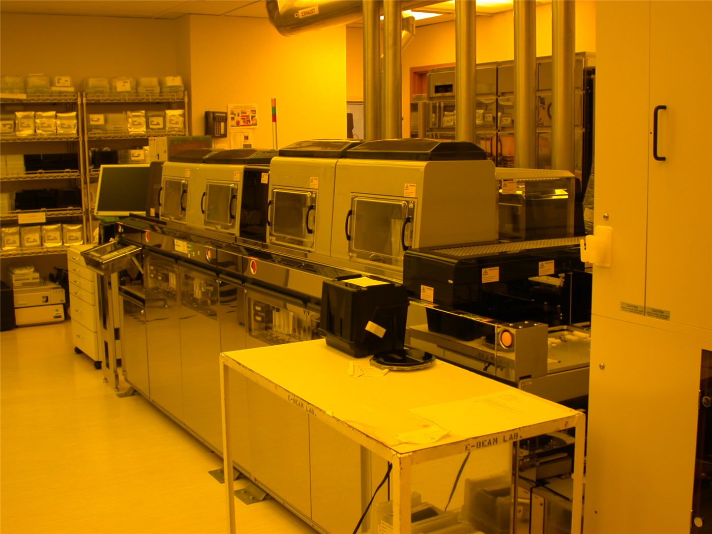

'AI 칩 슈퍼사이클' 전망… 병목은 결국 '이것'
글로벌 투자업계에서 반도체가 'AI 칩 슈퍼사이클'에 진입했다는 전망이 나왔다. 다만 진짜 병목은 첨단 패키징·전력 등 인프라라는 분석이다.
조계현 기자 · 2026.06.22
橋국제·경제

반도체가 AI 수요에 힘입어 역대급 호황 주기에 들어섰다는 전망이 제기됐다고 자유시보가 22일 전했다. 시장에서는 AI 칩 수요가 한동안 강세를 보일 것으로 봤다.
광고 문의 · 300×250다만 전문가들은 칩 자체보다 첨단 패키징, 고대역폭 메모리, 전력·냉각 인프라가 공급의 병목이 될 수 있다고 지적한다. 생산능력 확충이 수요를 따라가지 못할 수 있다는 것이다.
이런 흐름은 한국·대만의 메모리·파운드리 기업에 기회이자 시험대다. 첨단 공정과 후공정 역량을 갖춘 기업이 사이클의 수혜를 더 크게 누릴 수 있다.
반면 과열 우려도 있다. 수요 전망이 한 번 꺾이면 설비 투자 부담이 부메랑으로 돌아올 수 있어, 기업들은 신중한 투자 속도 조절을 고민한다.
華橋時報는 장밋빛 전망과 과열 경계론을 함께 전하며, 화인 기업·투자자에게 균형 잡힌 관점을 제공한다.
출처·참고 (사실 확인용 — 본문은 직접 재작성)
· 자유시보(ltn)
· 자유시보(ltn)